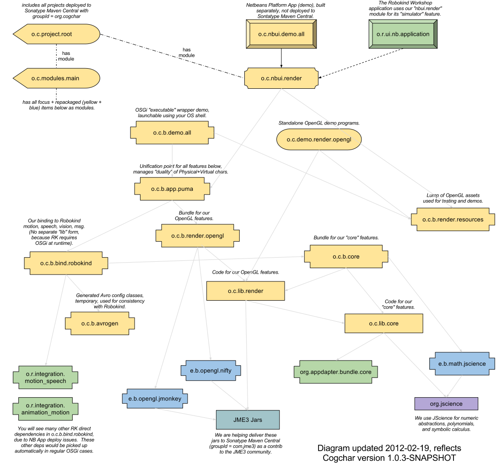

CogChar - Cognitive Character Software
CogChar is an open source cognitive character technology platform.
Our characters may be physical (robots), virtual, or both.
Applications in therapeutics, education, research, and fun!
Key Features
- Fusion of sensor and symbol streams, applied to self-image and model of world.
- Character sees, hears, touches and knows in many related symbolic and physical/virtual/numeric dimensions.
- My left-eye camera sees some pixels, some of which are recognized as a face, which may be matched to a name, which I may choose to say, producing a certain sound...
- I am standing on a floor, so my feet feel pressure from the floor. I am holding my torso erect above my legs, and my head above my torso. I am looking at a person called Samantha. I can describe these facts to you in spoken words, and you can also see these facts reflected in my physical/virtual display, because they are coming from the same world-image, built from the current fused estimate of all available information (both physical and symbolic).
- Blended adaptive estimators and controllers
- Run any numeric and symbolic learning algorithms you have heard of (bayesian, neural, genetic, you name it),
using Java, Scala, R, Weka, Hadoop.
- Cogchar provides: Metadata-driven analysis and update of 1) pruned immutable trajectory logs and 2) mutable (markovian) state vectors.
- Rendering mind and body together
- Interact with visualizations of character's body, mind, and environment, overlapped in interesting ways (what's inside the character's left ear right now?)
- Standard OpenGL 3D display for any compatible device (computer, tablet, smartphone, game console)
- Ongoing conversation coordination
- Keep track of many conversation partners over any length of time (minutes to years).
- Consult reference sources during conversations, and decide which ones to mention.
- Conversation is integrated with embodiment, self-image, and world model.
Technical Summary
- For the big picture, please see
- Dependencies diagram below this bullet list.
-
Architecture + dependencies
presentation on the experimental Friendularity.org site.
- Java, Scala, and OSGi core technology
- Symbolic metadata smarts (RDW/OWL/SPARQL) from Appdapter platform
- 3D character rendering to OpenGL using JMonkey Game Engine, LWJGL, BulletPhysics
- Connection with many popular open source mathematics, AI and robotics tools
- Robokind - Binding to physical humanoid robot features
- Cogbot - Advanced conversation features, emotion simulation, and links to online virtual worlds
- Integration with MIDI + SMPTE music+video technology for action mapping, triggering, and synchronization
- Serialization to Avro, messaging over AMQP, cloud integration via Hadoop
- Planned compatibility with Android platform
For More Information
- Source tree (maven is not strictly required, but makes life easier, for Us!)
- Somewhat old Javadocs on Jarvana, be sure to check version, there is a lag from Maven Central.
- Please visit the Wiki in our workspace.
- Visit the Appdapter, Robokind, and JMonkey-Engine websites.
- You may ask questions and discuss the software using the cogchar-users google group.
